актер театра и кино, клоун
с 1987 года – артист театра «Лицедеи». сотрудничает с театрами: БДТ, «Приют Комедианта», Санкт-Петербургский театр «Русская антреприза» имени Андрея Миронова, «Современник»
постановка предлагает новый способ осмысления науки через театр. в центре внимания – фигура Владимира Зворыкина, русского ученого, с начала XX века разрабатывавшего способы передачи движущегося изображения на расстояние, легендарного изобретателя, чьи открытия сделали возможным коммерческое телевидение
в синтетическом проекте «Эфир» научная работа включена в структуру действия, и зрители наблюдают реальные радиофизические процессы.
в сценическом пространстве располагаются экраны телевизоров и аутентично воссозданные приборы, преобразующие движущееся изображение в электрические сигналы
эксперименты и научные демонстрации, проводимые с их помощью, сочетаются с театральным повествованием
специально созданные для постановки видеоарт и музыка формируют многослойную историю
Владимир Зворыкин оказывается внутри своего изобретения и наблюдает, как его творение изменило мир
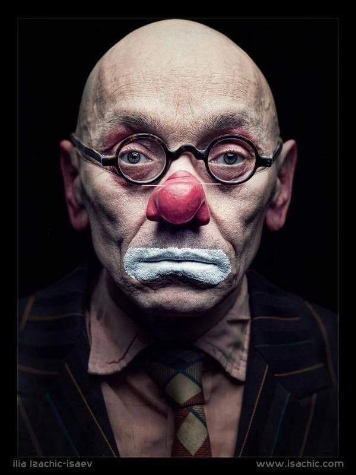
актер театра и кино, клоун
с 1987 года – артист театра «Лицедеи». сотрудничает с театрами: БДТ, «Приют Комедианта», Санкт-Петербургский театр «Русская антреприза» имени Андрея Миронова, «Современник»
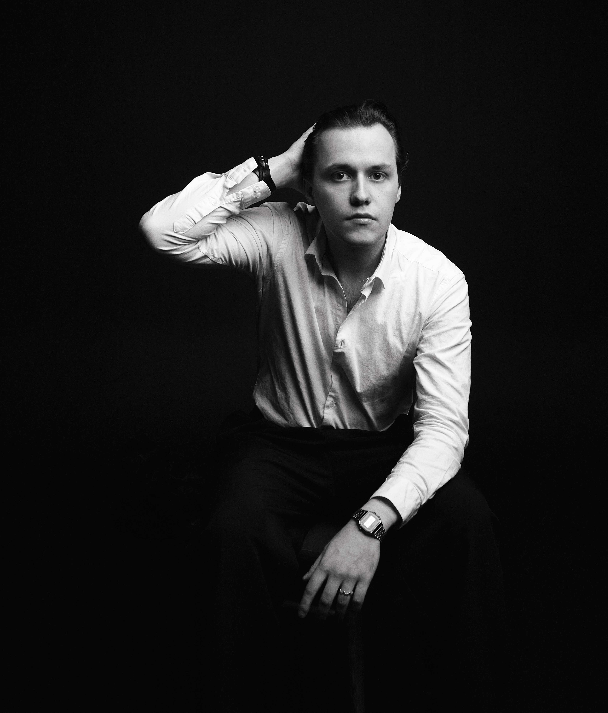
режиссёр нового поколения, вошедший в список Blueprint-100 (2025) как одна из ключевых фигур будущего музыкального театра
его путь - от дебюта с бриттеновской "Рекой Керлью" в Пермской опере до преподавания в Санкт-Петербургской консерватории и кураторства в Дягилевском фестивале - отражает смену театральной оптики: от академизма к живому эксперименту
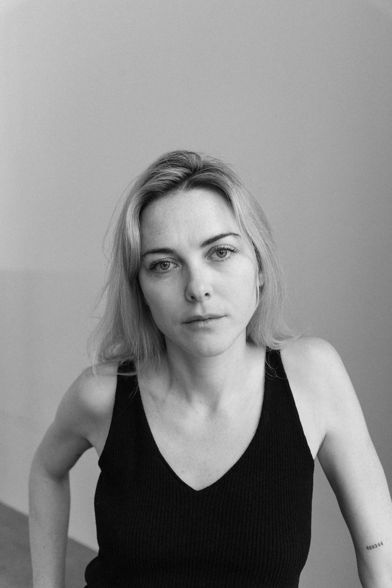
сценарист, актриса, режиссер
окончила Московскую школу нового кино, курс режиссуры (мастерская Артура Аристакисяна) и Щепкинское театральное училище
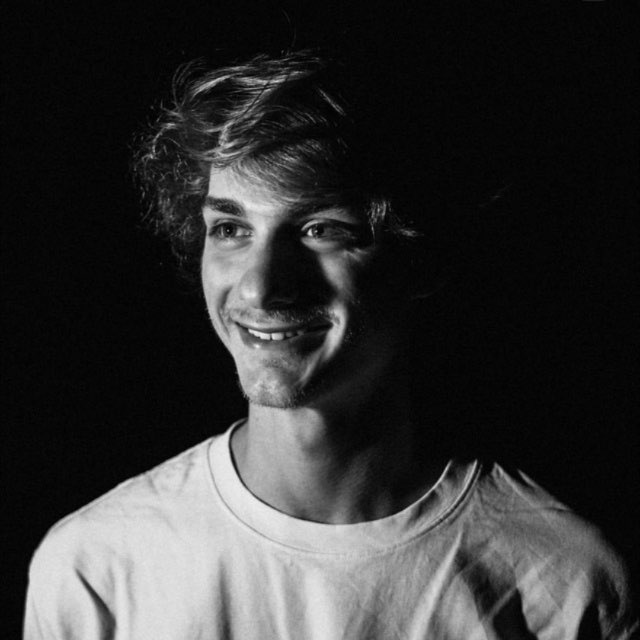
сценограф
окончил Школу-Студию МХАТ, факультет сценографии (2021). с 2019 года работает в таких театрах, как Современник, театр на Таганке, Сатирикон, театр имени Вл. Маяковского, Студия театрального искусства С. Женовача, театр имени Е.Б. Вахтангова, театр на Малой Бронной, театр имени М.Ф. Ермоловой
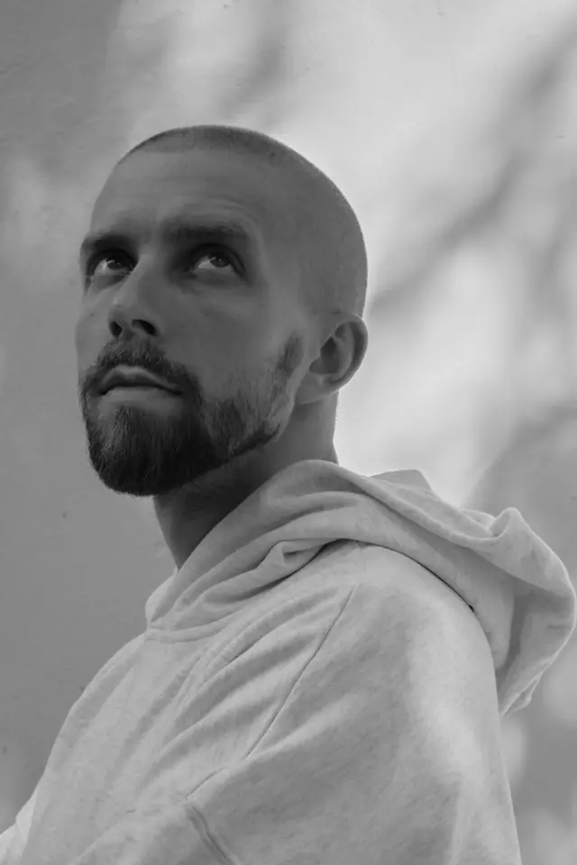
композитор
пишет академическую и электронную музыку, автор и продюсер театральных проектов
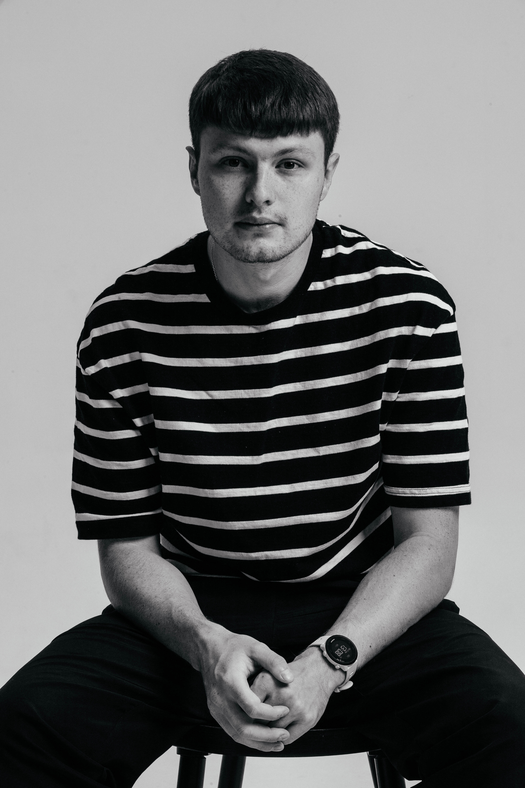
художник по свету, сотрудничает с Пермским театром оперы и балета им. П.И.Чайковского
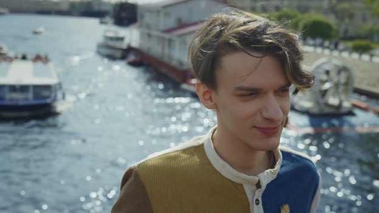
цифровой художник и специалист по компьютерной графике
член Союза художников России
участник выставок в Эрмитаже, Новом Манеже, Зарядье и Theatre of Digital Art Dubai
студент высшей школы экономики
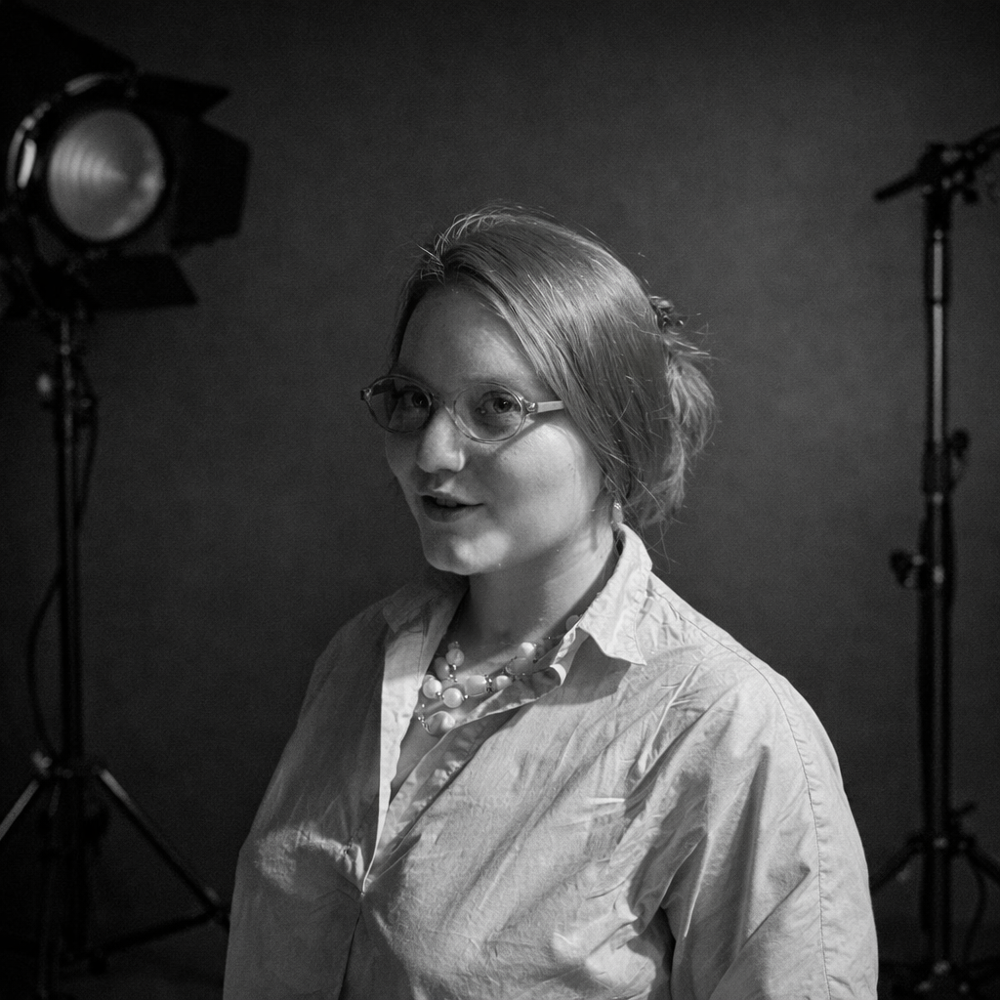
ассистент режиссера
студентка Санкт-Петербургской государственной консерватории им. Н.А.Римского-Корсакова
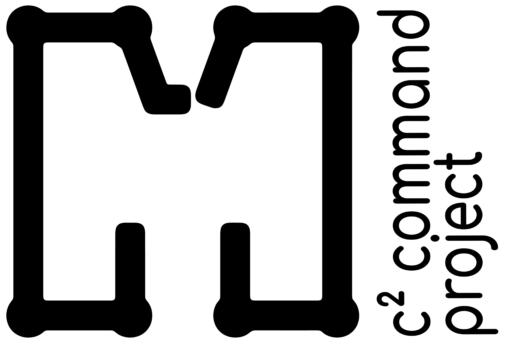
научно-техническое консультирование по принципам механического и электронного телевидения
театр «Балет Евгения Панфилова»
Пермь, Петропавловская, 185
по всем вопросам
diaghilevfestival@gmail.com
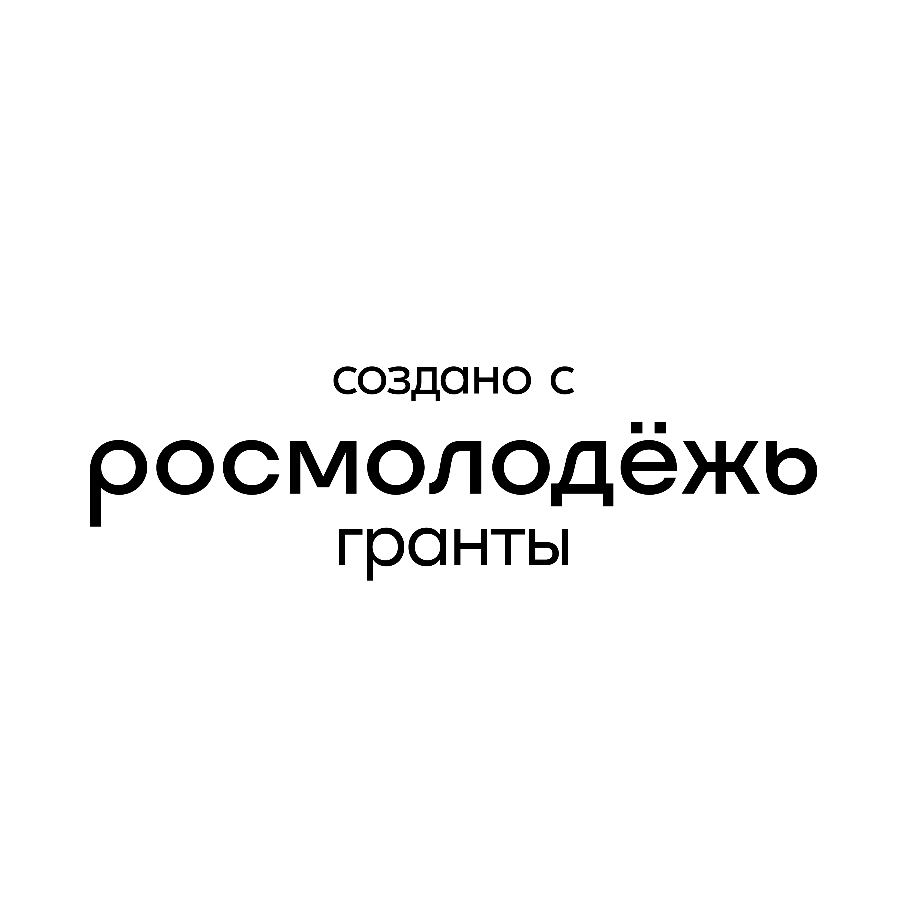
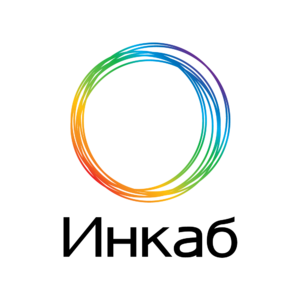